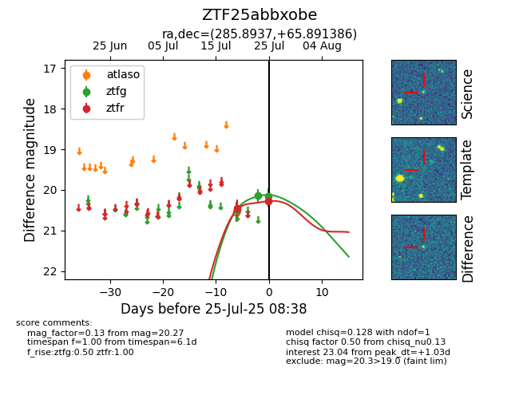

Target ZTF25abbxobe at 2025-07-25 08:38, see:
FINK: fink-portal.org/ZTF25abbxobe
Lasair: lasair-ztf.lsst.ac.uk/objects/ZTF25abbxobe
ALeRCE: alerce.online/object/ZTF25abbxobe
alt names
ZTF25abbxobe (ztf,fink)
coordinates:
equatorial (ra, dec) = (285.8937,+65.89139)
galactic (l, b) = (96.5463,+23.38869)
photometry
last ztfg=20.15, ztfr=20.27
3 ztfg, 2 ztfr detections
